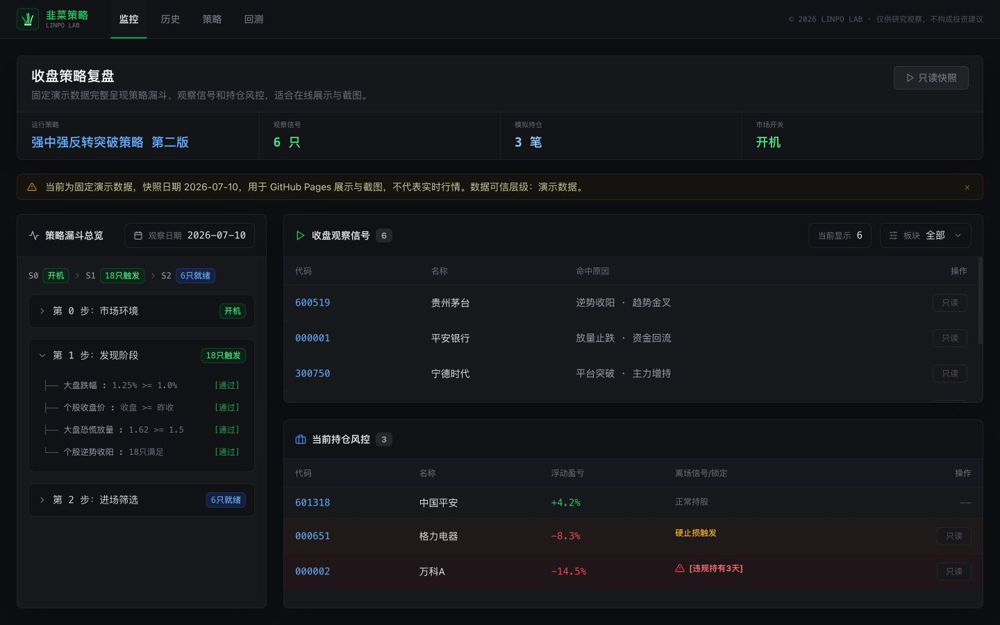
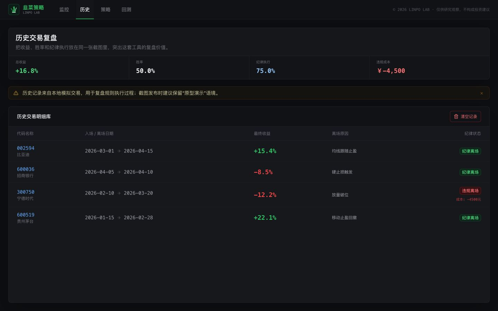
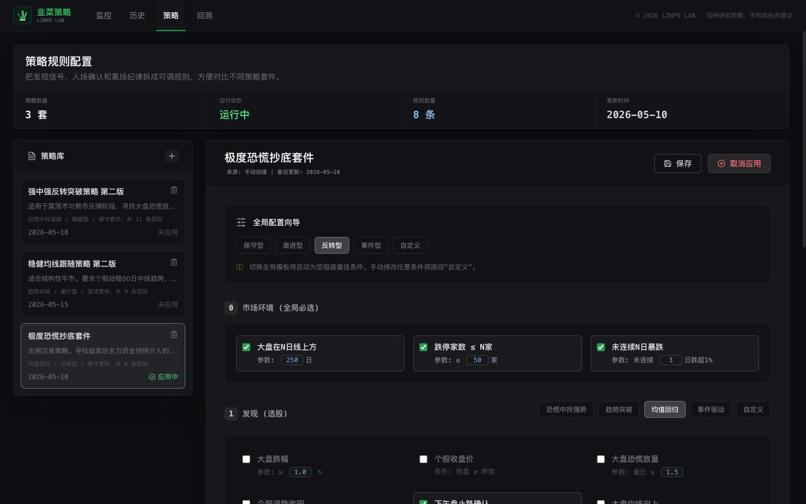
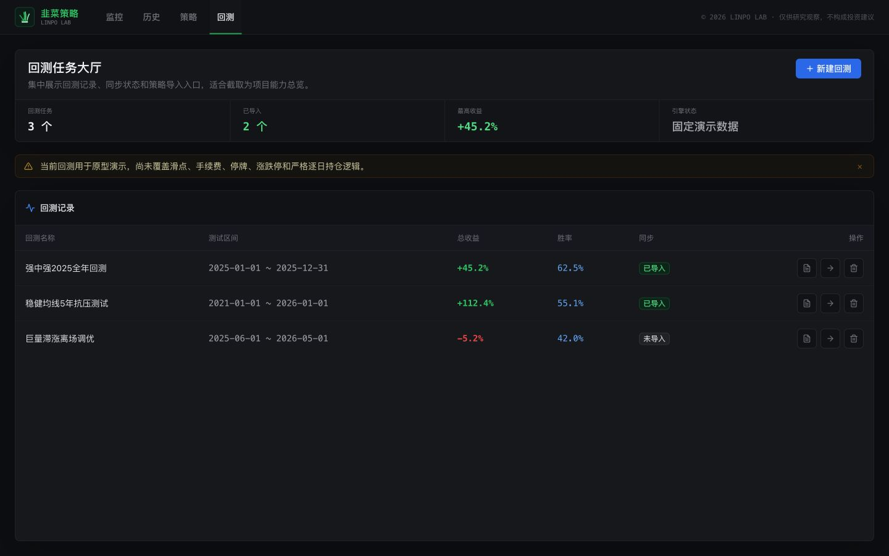

策略配置到历史回看的收盘后复盘闭环。
01 / 实验速览
先确认复盘流程成立，再讨论策略是否可信。
可演示的本地原型与 GitHub 收盘静态版。
收盘或样本数据，不是盘中实时行情。
监控、历史、策略与回测四个界面阶段。
02 / 日常复盘证据
从收盘检查进入候选信号，再回看模拟动作。
监控页是第一主证据，历史页完成动作回看；两张界面共同说明模拟复盘记录如何被检查与追溯。
Stage A / 收盘检查
策略漏斗、收盘信号和模拟持仓同时可见
监控页把规则筛选结果、候选信号和当前模拟持仓放在同一检查面，证明复盘动作正在发生。
线上截图 · 2026-07-13 · ?tab=监控 · revision 4ae82bff
这张图只证明收盘检查的界面流程可见，不证明信号准确、数据实时或策略盈利。
Stage B / 动作回看
模拟动作保留收益、纪律和离场原因
历史页让一次模拟记录可以被复查，帮助用户讨论规则是否被执行。
线上截图 · 2026-07-13 · ?tab=历史 · revision 4ae82bff
03 / 策略验证证据
规则可以讨论，回测可信度仍需单独成立。
策略配置解释信号从何而来；回测页只证明验证入口存在，不能被称为结果证明。
Stage C / 规则来源
发现、确认与离场条件被拆成可配置规则
策略页将大盘环境、发现阶段、入场确认和离场规则显式展开，使规则能够被讨论和修改。
线上截图 · 2026-07-13 · ?tab=策略 · revision 4ae82bff
Stage D / 验证缺口线上截图 · 2026-07-13 · ?tab=回测 · revision 4ae82bff
回测任务与导入入口已经存在，严格验证尚未成立
验证边界：当前回测尚未完整覆盖滑点、手续费、停牌、涨跌停、复权与逐日持仓，不能据此宣称策略收益成立。

04 / 运行边界
本地完整交互与 GitHub 收盘静态版是两种不同形态。
本地版通过 /api/* 使用 Python API、SQLite 和浏览器存储；GitHub 版由 Actions 收盘后生成静态 JSON，只提供只读复盘。
数据源会降级。系统按 AKShare → BaoStock → 新浪 → mock 尝试。免费源失败后，页面仍可能显示样本数据，因此数据源状态必须与结果一起阅读。
运行范围：GitHub 版只读；本地原型不接入真实账户、不执行订单，也不提供盘中实时扫描。
05 / 五步复盘流程
把规则、信号、模拟动作和回看串成一条可检查路径。
01 · 配置明确市场、发现、确认和离场规则。
02 · 收盘扫描在收盘数据上生成候选结果。
03 · 信号检查查看漏斗、候选与数据源状态。
04 · 模拟记录记录模拟买入、持仓和离场动作。
05 · 历史回看复查纪律执行与离场原因。
真实免费源不可用时继续降级，最终可能使用 mock；warning 必须保留，样本不能伪装成真实行情。
SQLite 缓存行情；IndexedDB 恢复扫描记录；localStorage 保存策略和历史。这些都不是跨设备长期数据库。
06 / 实验结论
产品流程已经成立，数据和回测可信度还没有。
已成立
策略规则可以被配置和讨论，收盘检查、模拟记录与历史回看形成了可演示的产品路径。
仍薄弱
免费数据源、真实指标计算、逐日回测、交易成本与长期存储尚不足以支撑真实交易判断。